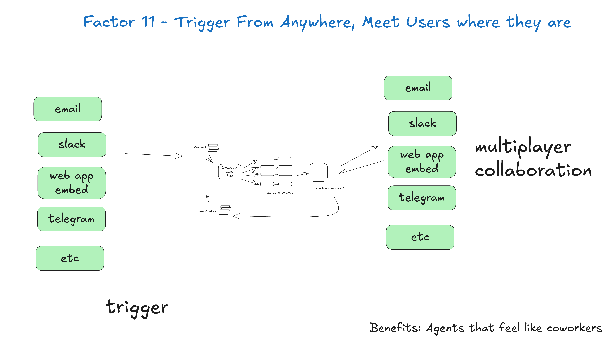

11. 從任何地方觸發，在使用者所在之處與他碰面（Trigger from anywhere, meet users where they are）
如果你在等 humanlayer 的推銷，你等到了。如果你已經做了要素 6：用簡單的 API 啟動、暫停、恢復與要素 7：用工具呼叫聯絡真人，就已經準備好採納這一條了。

讓使用者能從 slack、email、sms 或任何他們想要的管道觸發代理。也讓代理能透過同樣的管道回覆。
好處：
- 在使用者所在之處與他碰面：這能幫你打造像真人的 AI 應用程式，至少像數位同事
- 外迴圈代理（Outer Loop Agents）：讓代理能由非人類觸發，例如事件、cron、服務中斷等等。它們可能工作 5 分鐘、20 分鐘、90 分鐘，但走到關鍵節點時，能聯絡真人尋求協助、回饋或核准
- 高風險工具：如果能快速把各種真人拉進來，你就能讓代理執行風險更高的操作，例如寄送外部郵件、更新正式環境資料等等。維持清楚的標準，就能得到可稽核性與信心，讓代理去做更大、更好的事